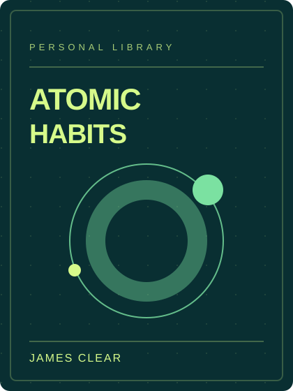
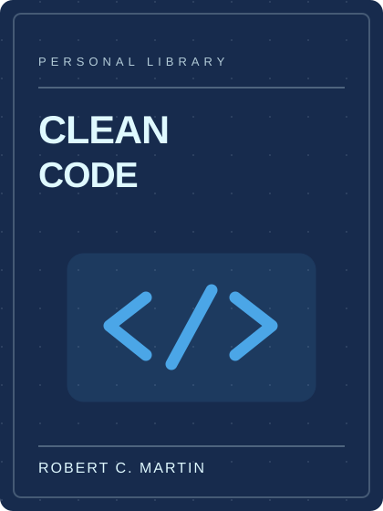
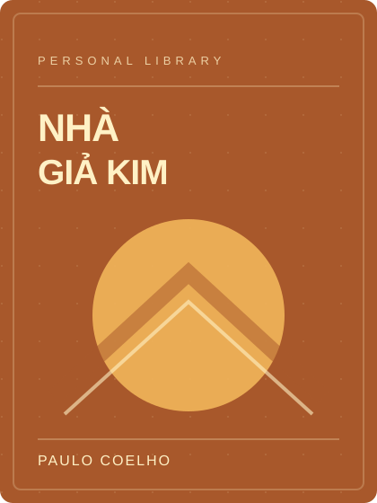
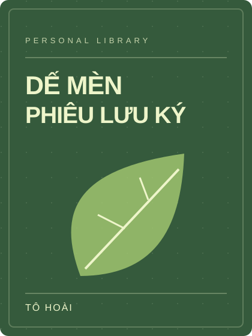
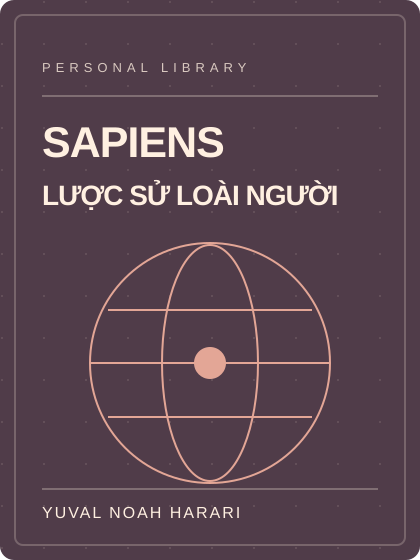
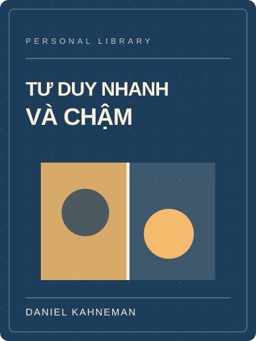
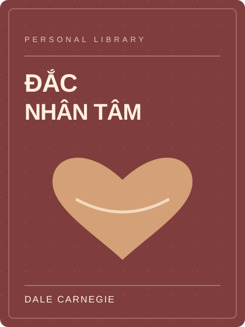
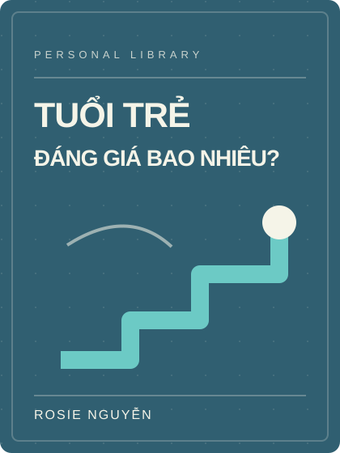
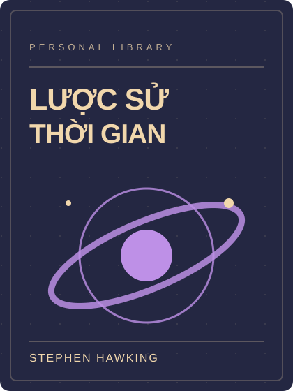

GÓC NHỎ CỦA NGƯỜI YÊU SÁCHNhững cuốn sách hay,
Những cuốn sách hay,
ở đúng nơi của chúng.
Lưu giữ những câu chuyện bạn yêu thích. Theo dõi hành trình đọc và xây dựng tủ sách mang dấu ấn riêng.
DỮ LIỆU MINH HỌA
Tổng quan tủ sách
Tổng số sách
09 cuốn
Tất cả sách trong thư viện
Đã đọc
03 cuốn
Đã hoàn thành
Đang đọc
02 cuốn
Hành trình đang tiếp tục
Muốn đọc
04 cuốn
Đang nằm trong danh sách
BỘ SƯU TẬP CỦA BẠN
Tủ sách của tôi 09
Ô tìm kiếm và bộ lọc hiện chỉ là giao diện. JavaScript sẽ được bổ sung ở tuần 2.

#01Kỹ năng sống
Atomic Habits

#02Công nghệ
Clean Code

#03Tiểu thuyết
Nhà giả kim

#04Văn học
Dế Mèn phiêu lưu ký

#05Lịch sử
Sapiens: Lược sử loài người

#06Tâm lý
Tư duy nhanh và chậm

#07Kỹ năng sống
Đắc nhân tâm

#08Kỹ năng sống
Tuổi trẻ đáng giá bao nhiêu?

#09Khoa học